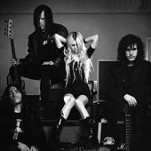

Главная | Общая информация | История | Дискография | Источники | Заказать альбом | Контакты

Группа образовалась в октябре 2008 года. В первый состав входили Джон Секоло, Мэтт Чиарелли и Ник Карбоун. В начале 2009 года The Pretty Reckless выпустили несколько демо-записей и выступали на разогреве у The Veronicas. 4 июня 2009 года Момсен решила расстаться с членами группы из-за несовпадения в музыкальных вкусах и пригласила новых музыкантов. Группа подписала контракт с лейблом «Interscope Records» и выпустила дебютный альбом 30 августа 2010 года. В одном из интервью Момсен заявила, что стиль группы будет «неожиданным», с тяжёлым звучанием, но одновременно с забавными и лёгкими чертами; на него повлияли такие группы как Marilyn Manson, The Beatles, Oasis и Nirvana;лично на Момсен оказали влияние Мэрилин Мэнсон, Курт Кобейн и Джоан Джетт.
Живые выступленияГруппа открыла фестиваль V в Великобритании в 2010 году. Группа отправилась в четырехдневный тур по Великобритании, начавшийся в Глазго, Шотландия, в бальном зале Barrowland Ballroom 13 декабря 2010 года при поддержке Francesqa.В 2011 году группа объявила о туре, который продлится с начала февраля по конец марта. Группа появилась на Download Festival в июне. Запланированное выступление на Soundwave Revolution , австралийском музыкальном фестивале, было отменено. Летом группа выступила на нескольких европейских фестивалях, таких как Rock Am Ring в июне, Optimus Alive. 8 июля в Португалии, Rock Werchter 2 июля в Бельгии. В июле 2012 года The Pretty Reckless впервые прибыли в Аргентину. Шоу группы состоялось 29 июля в Буэнос-Айресе. В сентябре 2012 года The Pretty Reckless выступили хедлайнерами на фестивале Bazooka Rocks в Маниле , Филиппины, завершив свой The Medicine Tour.
Альбом "Light Me Up"Дебютный студийный альбом. Он был выпущен 27 августа 2010 года на лейбле Interscope Records. Процесс записи начался в 2008 году, после того как Тейлор Момсен познакомилась с продюсером Като Кхандвалой и его партнером, автором песен Беном Филлипсом. Альбом получил гораздо больший успех в Великобритании, где он был выпущен за несколько месяцев до американского релиза. 12 января 2018 года альбом получил золотой сертификат Британской ассоциации производителей фонограмм (BPI), что означает отгрузку более 100 000 копий.
Последний альбом"Death by Rock and Roll" — четвёртый студийный альбом американской рок-группы The Pretty Reckless, выпущенный 12 февраля 2021 года. Это первый альбом группы, выпущенный на их новом лейбле Fearless Records и первый альбом группы после смерти в 2018 году их давнего продюсера Като Кхандвалы.
© Все права защищены.